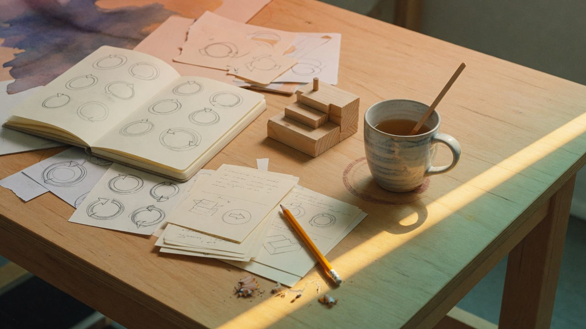

Table of contents
What’s in the pack
The cover was the introduction. This page is the map: seven lessons, then quiz and labs. About 2–4 hours across a week if you follow the path.

Same field as the cover: a loop (how you learn), a method (how you organize), and a ship decision (when you stop exploring).
Suggested path
- Lessons 1–2 → Spaced Repetition Lab
- Lessons 3–4 → Term Match
- Lessons 5–6 → Scenario Audit
- Lesson 7 → Steelman + quiz
Lessons

Arc A — The door

Arc B — Methods and intent
Lesson 02
Project Management Methodology
Design Thinking, Lean Startup, Agile, Scrum, dual-track, Waterfall, DoD.
Lesson 03
Communicating Intent
Purpose, end state, constraints, HMW, non-goals, briefs, alignment vs instruction.

Arc C — Tools
Lesson 04
Brainstorming
Deferred judgment, Crazy 8s, SCAMPER, Socratic and devil’s-advocate review.
Lesson 05
Prototyping
Fidelity, pretotype vs MVP, smallest testable slice, riskiest assumption first.

Arc D — Guardrails and ship
Lesson 06
Review
Critique, assumption mapping, RAT, pre-mortem, steelman, kill / pivot / ship.
Lesson 07
Iteration and Shipping
Learning vs feature velocity, evidence thresholds, launch, operations, mode switch.